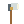
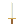
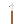
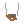
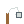

Dagues de lancerDeux dagues rapides sur des cibles différentes.

Hache de lancerUne hache lourde qui traverse puis revient.
Arc longUne flèche précise et rapide sur une cible.

ÉpéeUne taille frontale touche jusqu’à trois ennemis.

LanceUne estocade transperce une ligne devant vous.

ArbalèteUn carreau lent à recharger, très puissant et perforant.
FauxUn large balayage frappe les ennemis autour de vous.
MasseUn coup lourd étourdit brièvement jusqu’à deux ennemis.

FrondeUne pierre rebondit sur deux cibles proches.

FléauUne boule d’acier décrit une orbite et frappe au contact.